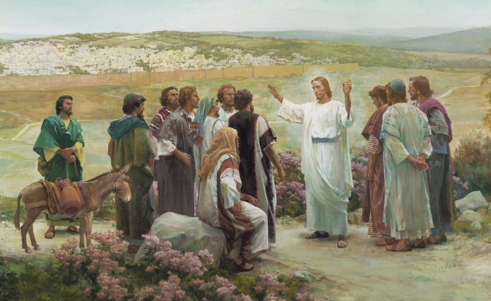

February 12, 2023

- Presiding: Bishop Casey Jones
- Conducting: Bishop Casey Jones
- Opening Hymn: #308 Love One Another
- Opening Prayer: Sister Phyllis Allen
- Ward Business
- Sacrament Hymn: #184 Upon the Cross of Calvary
- Administration of the Sacrament
- Speaker: Sister Chelsey Finlayson
- Speaker: Brother Scott Peterson
- Closing Hymn: #220 Lord, I Would Follow Thee
- Closing Prayer: Brother Kelly Allen